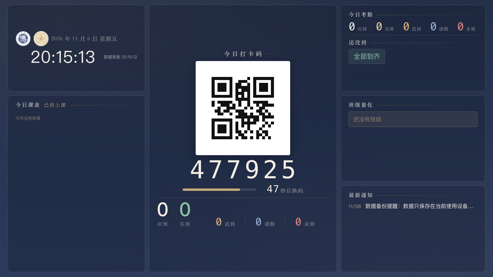

⚠️ 成品验收：看板端已上线（VoxOS 5.23）——现在补给你看真实成品
以下是线上代码的真实渲染（1920×1080 实拍）。看完三种处理：①满意 → 不动；②要调 → 回对话说哪块改哪；③不喜欢 → 我一键回退到改版前的老看板。
款式 1 · 打卡为主（二维码居中放大，其他信息左右排列）
款式 2 · 信息为主（量化/考勤/课表放大，码缩为侧卡）

编辑模式（右下「调布局」进入：拖拽换位 / ‹› 微调 / 一键恢复两款 / 自动记住顺序）